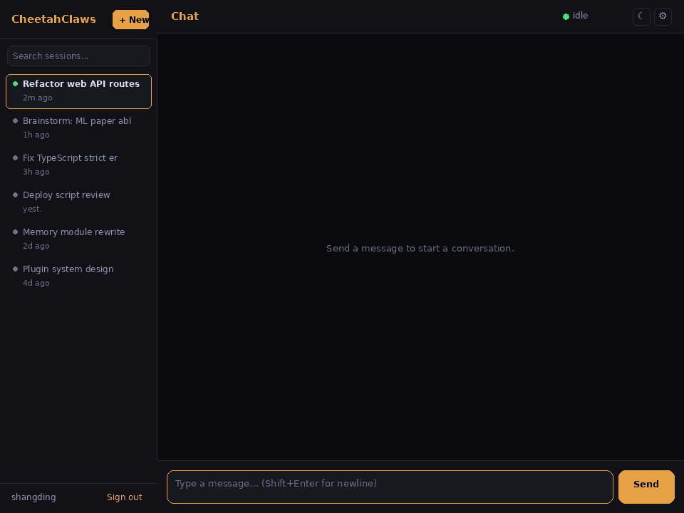
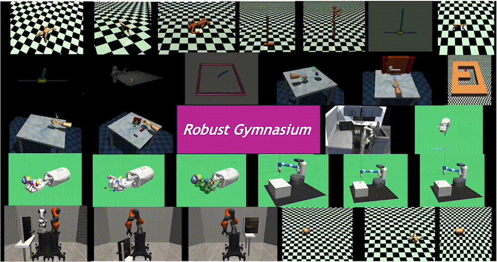
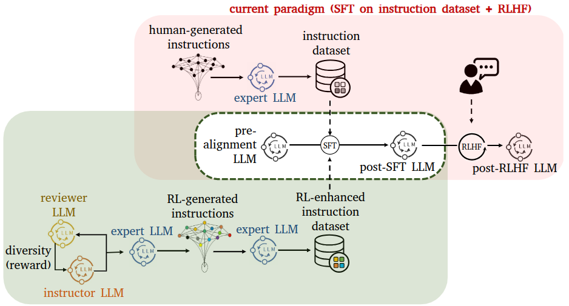
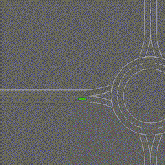
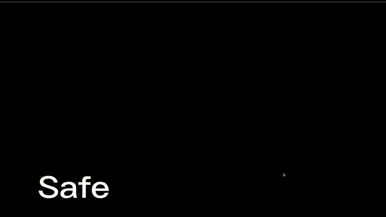

Concretely, the lab builds algorithms, theory, benchmarks, and open-source systems for safe decision-making under uncertainty — spanning safe reinforcement learning, robot learning, and LLM-based agents — and evaluates them in robotics, autonomous driving, smart grid, and semiconductor-manufacturing scenarios.
Safe Reinforcement Learning Robot Learning Large Language Models & Agents Multi-Agent Reinforcement Learning AI Safety & Trustworthy AI Semiconductor Manufacturing
More on our publications and open-source softwares.

CheetahClaws is a fast and easy-to-use agent harness infrastructure designed for long-horizon, multi-model, and tool-using AI systems. It provides a flexible and extensible framework supporting frontier and local models, tool use, memory, multi-agent orchestration, and autonomous task execution for building and studying advanced AI agents.

This benchmark aims to advance robust reinforcement learning for real-world applications and domain adaptation. The benchmark provides a comprehensive set of tasks that cover various robustness requirements in the face of uncertainty on state, action, reward, and environmental dynamics, and spans diverse applications including control, robot manipulation, dexterous hands, and so on.

This work presents TeaMs-RL, a method that leverages reinforcement learning to directly generate instruction datasets for fine-tuning LLMs. By minimizing reliance on human feedback and external queries, TeaMs-RL enhances data quality, privacy, and model capabilities, making it a valuable approach for foundation-model post-training.

This study introduces a safe MARL method based on a Stackelberg model with bi-level optimization, featuring two algorithms, CSQ and CS-MADDPG, for autonomous driving applications. Experimental results demonstrate its superior safety and performance compared with strong MARL baselines in challenging driving scenarios.

We investigate safe MARL for multi-robot control on cooperative tasks, in which each individual robot has to not only meet its own safety constraints while maximizing its reward, but also consider those of others to guarantee safe team behaviors.
More topics we work on — including safe RL for semiconductor manufacturing and smart-grid operation, robust RL, offline RL, and agentic web research — are summarized on the homepage and in our publications.